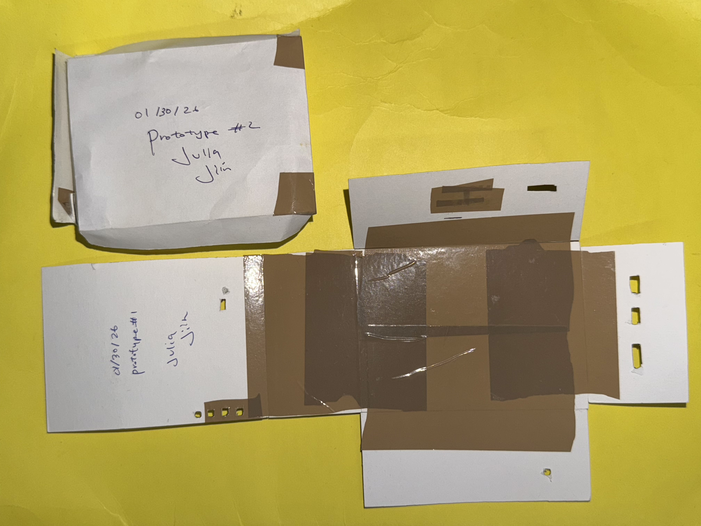
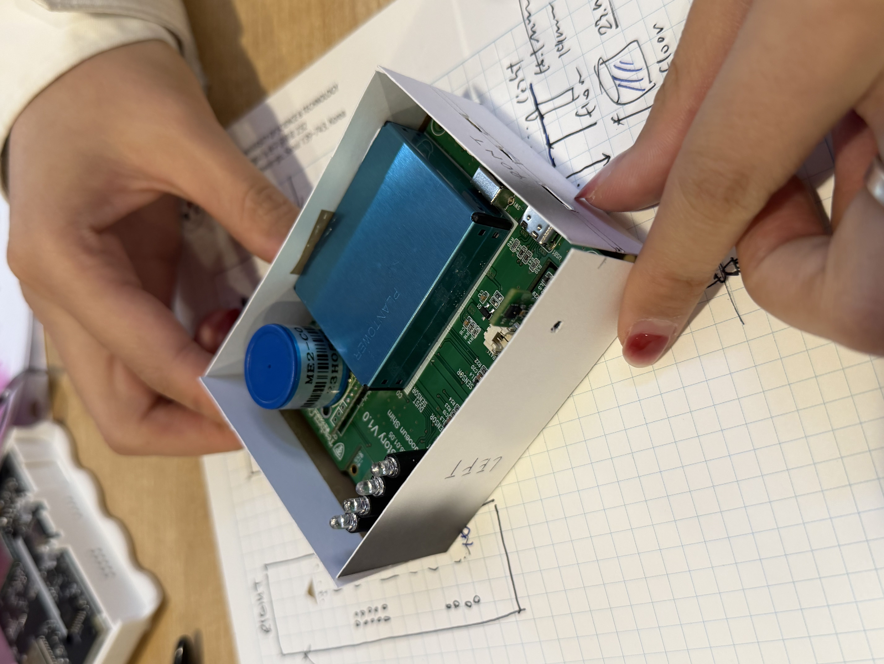

Phase 00 · Jan 30, 2026
Prototype · Paper
Before anything else — paper and tape.
The very first prototypes were paper. Prototype #1 and #2, both dated 01/30/26, both signed Julia · Jiin. We cut, folded, and taped paper cases directly around the PCB to understand the real dimensions — how tight the fit needed to be, where the ports would land, how the sensors needed to breathe.
Working on graph paper with handwritten dimension notes alongside, it's the kind of step that doesn't show up in final deliverables but shapes everything that comes after.


w/ Julia Ran Ju
Paper prototyping
AirStory V1.0 PCB
Dimension sketching